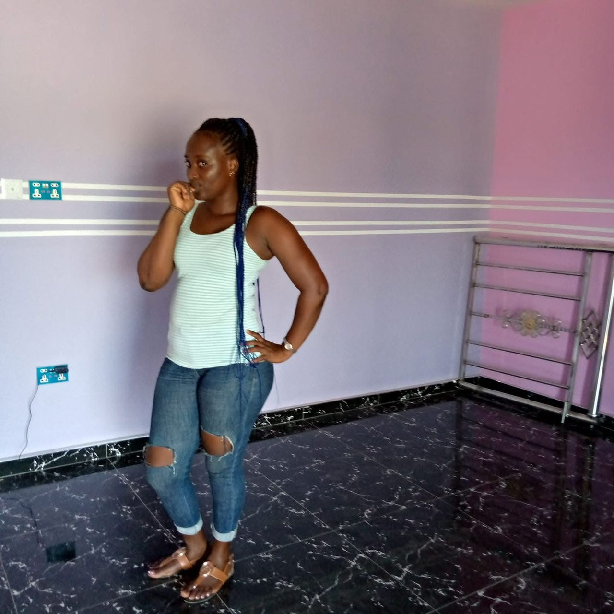

Ladies and gentlemen, family and friends,
We gather here today to celebrate the life of our beloved Regina Egyir, affectionately known as Nana. Regina was born on the 9th of May, 1990, to the late Rexford Egyir and Georgina Arthur. As the eldest of five siblings, she embodied the spirit of leadership and love from a young age.
Regina’s educational journey began at the Young Christian Preparatory School, where she laid the foundation for her bright future. From 1993 to 2002, she thrived in her studies, later continuing her education at Cobbah Yalley School, Effiakuma, from 2003 to 2007. After completing her basic education, Regina pursued her passion for beauty and style by training as a professional hairdresser at Bethel Saloon in Takoradi for three years.
With her skills and determination, Regina opened her own hairdressing shop at New Site, Takoradi, marking the beginning of her entrepreneurial journey. In 2016, she moved to Kasoa, where she expanded her business to include an Indomie joint as a side, demonstrating her versatility and drive. It was during this time that she met a man, with whom she had a beautiful baby boy. Their union was celebrated through customary rites, showcasing her commitment to family. She later moved to Cape Coast to establish a cosmetic shop, further expanding her entrepreneurial ventures.
Regina’s journey was not just about her personal ambitions. In 2021, she selflessly moved to her mother’s place in Kasoa to assist in her chop bar business, embodying the values of family and support.
However, life presented Regina with challenges. In September 2022, she faced a significant health battle when she was diagnosed with cancer at the Korle Bu Teaching Hospital. After undergoing surgery, she displayed immense strength and resilience, enduring a month of treatment before being discharged in October 2022. Despite her challenges, Regina continued to manage her business alongside her mother, even adding the sale of slippers and sandals to her endeavors.
As recent as September 2024, she sought medical attention for worsening waist pain, returning to Korle Bu for treatment. Yet, her spirit remained unbroken as she continued to work and care for her family. In December 2024, yearning for the comfort of her roots, she asked to return to Takoradi, where she had spent most of her life.
Tragically, her condition worsened upon her return. After being rushed to Daboase Hospital and later to Effia Nkwanta Hospital, Regina’s battle came to an end on the 25th of December, 2024.
Nana has left a profound void in our hearts. Her laughter, love, and unwavering spirit will forever be cherished in our memories. As we reflect on her life, let us remember her strength, her dedication to family, and her entrepreneurial spirit that inspired us all.
May her gentle soul rest in perfect peace until we meet again.
Damirifa Due. Due na amanihunu. Da yie.